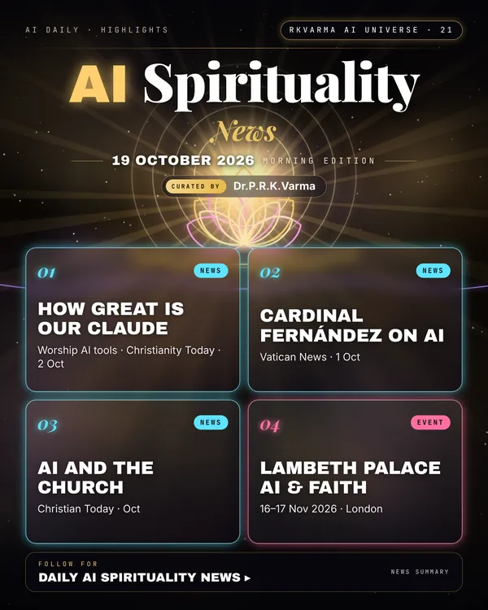

Latest updates · 19 October 2026
In the full issue →Faith communities are working out how to use AI. Worship leaders are building Claude-based tools, the Vatican's doctrine chief has reflected on AI and humanity, and UK churches are weighing skills and spirit.
Research, industry & policy
- How Great Is Our Claude, Christianity Today · 2 Oct 2026: Worship leaders use AI to build setlists and score songs for scriptural grounding.
- Cardinal Fernández on humanity and AI, Vatican News · 1 Oct 2026: In Madrid, the doctrine prefect reflected on how humanity and AI complement each other.
- 'We don't want to lose the Holy Spirit as well as our skills', Christian Today · Oct 2026: Chris Goswami of the AI Christian Partnership on what AI means for the church.
Journals & preprints
- Nothing new found today.
Conferences, workshops & events
- Grefenstette Center Symposium, 5–6 Nov 2026 · Pittsburgh: Faith, ethics and technology.
- AI, Ethics and Faith after Magnifica Humanitas, 16–17 Nov 2026 · Lambeth Palace, London: A conference on AI, ethics and faith.
Why it matters
Religious bodies are helping to set norms on AI's place in worship and moral life.

